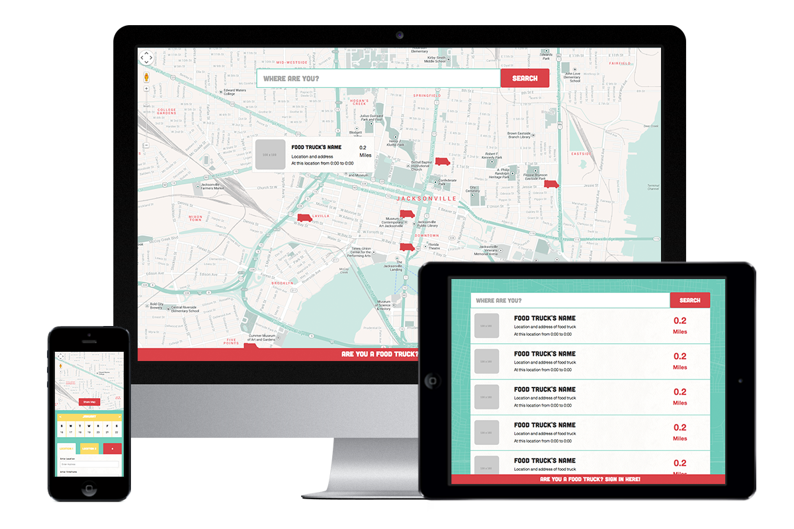

Truck 'n Seek
Food Truck App (Preview)
Aiming to connect people with trucks, this geo-locational app allows food truck owners to post their locations and timeframe. Customers are able to search and view nearby trucks after entering in an address. Created by Spring 2014 KYN apprentices.
